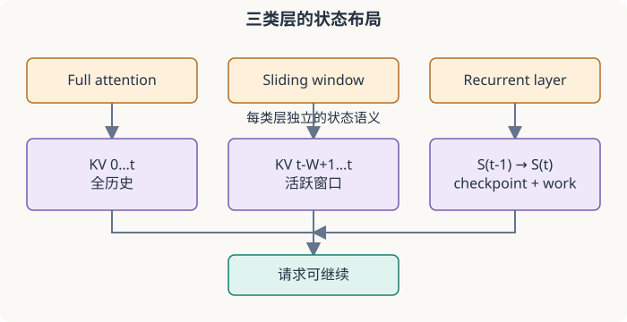
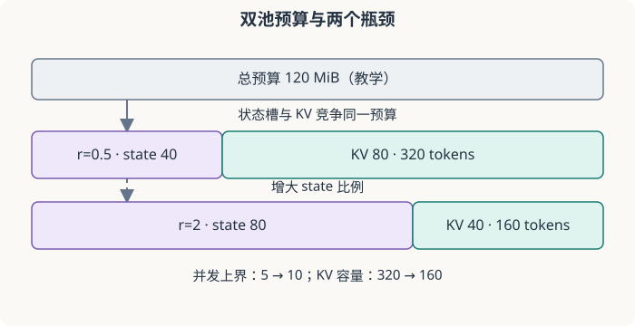

第 32 章 · SGLang 高级机制
Hybrid KV Cache：全局 KV、滑窗与循环状态
混合模型为什么要分别为 token KV 和 recurrent checkpoints 分配内存？
普通全注意力层缓存每个历史 token 的 K/V。滑窗注意力层只需要最近 W 个位置（需考虑模型特定 sink/边界）。Mamba、GDN、KDA 等循环层保存随 token 递推的状态，而非每 token 一份完整 attention KV。混合架构不能假定所有层共用同一种物理槽。
1. 一个 token，不是每层同一种状态
普通全注意力层缓存每个历史 token 的 K/V。滑窗注意力层只需要最近 W 个位置（需考虑模型特定 sink/边界）。Mamba、GDN、KDA 等循环层保存随 token 递推的状态，而非每 token 一份完整 attention KV。混合架构不能假定所有层共用同一种物理槽。
2. 三类对象及其生命周期
全注意力 KV 与 token position 对应；滑窗池用位置映射访问活跃窗口；循环层则从 S_{t-1} 和 x_t 更新 S_t。其工作态随当前请求推进，prefix checkpoint 是某个边界可复用的快照。不能把最后一个 recurrent state 当作任意历史前缀的状态。

3. 双池预算如何推导
设权重和其他开销扣除后可用教学预算 M，state:KV 字节比 r。则 M_state=rM/(1+r)，M_KV=M/(1+r)。若一个状态槽耗 s 字节、每 token KV 耗 b 字节，分别向下取整得到两种容量。真实布局还包含对齐、scratch、额外 draft 状态、各 rank 差异。
4. 两种耗尽模式：并发与驻留
M=120 MiB，r=0.5，state slot=2 MiB、KV token=0.25 MiB，则 20 slots、320 tokens。假设每运行请求 4 slots，则仅 5 个请求同时运行；若 5 个请求占满状态，即使 KV 仍有空间，仍无法接纳更多。多轮 session 还要为闲置 checkpoint 预留空间。

5. 为什么 prefix cache 命中仍可能失败
复用前缀需要 full KV 与相同边界的 recurrent checkpoint 均可用。若只有 KV A–D 而 S_D 已被淘汰且没有可用 host backup，不能从 D 直接继续循环层；需从更早一致 checkpoint 重放或重新 prefill。避免把 KV hit rate 解释为实际可复用全部 tokens。
6. 源码中的 request 与 layer 路由
HybridReqToTokenPool 维护 request 到 recurrent pool 的映射，MambaPool 提供状态读写与 copy；SWAKVPool 的 translate_loc_from_full_to_swa 与 layer router 表达另一类 hybrid（full+window）布局。二者不等价，也不意味着同一模型必然同时拥有三类层。
7. 如何调优而不复制别人的比例
--mamba-full-memory-ratio 是字节比，不是 state pool 占总量的百分比；--max-mamba-cache-size 可固定槽数。读取 boot log 中 per-request slots、KV tokens、max_running_requests 和状态槽容量；测量长短请求与 idle session 轨迹。不能单纯以最大并发选择对所有业务最佳的比例。
8. 交互：改变机制状态
异构状态池状态选择
r=0.5：120 MiB：state 40 MiB=20 slots；KV 80 MiB=320 tokens；并发上界 5。
r=1：state 60 MiB=30 slots；KV 60 MiB=240 tokens；并发上界 7（向下取整）。
r=2：state 80 MiB=40 slots；KV 40 MiB=160 tokens；并发上界 10，但长上下文可能先耗尽 KV。
上述均为教学数值；不代表 GPU benchmark。
9. 可执行 CPU 实验
下载 hybrid_pool_budget.py，使用 Python 标准库执行。实验验证离散状态与边界，不调用真实 SGLang engine 或 GPU kernel。
python3 examples/hybrid_pool_budget.py测试包含正常输入和不变量检查，具体断言见源文件。
10. 源码阅读路线与适用边界
固定上游实现快照 75ed36d976113c693f8e6f64925e119573a93fda。以下是源码与官方文档入口；教学公式是显式假设下的推导。
- Pool table / Size the pools：Hybrid linear-attention models allocate distinct recurrent-state and full-attention KV pools at startup; ratio r is state bytes to KV bytes.
- MambaPool / HybridReqToTokenPool：MambaPool and HybridReqToTokenPool provide recurrent state storage and request mapping.
- SWAKVPool / translate_loc_from_full_to_swa：The SWA pool registers a full-to-window mapping and routes access by layer.
- Two ways to run out：State slots cap running concurrency and retained checkpoints; a KV hit alone is insufficient if the recurrent checkpoint is unavailable.